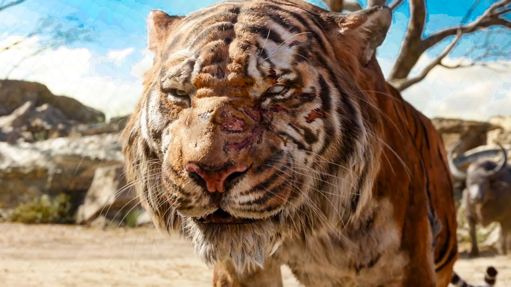

Jungle Book (1894)
It is a collection of stories by the English author Rudyard Kipling. Most of the characters are animals such as Shere Khan the tiger and Baloo the bear, though a principal character is the boy or "man-cub" Mowgli, who is raised in the jungle by wolves. The stories are set in a forest in India; one place mentioned repeatedly is "Seonee" (Seoni), in the central state of Madhya Pradesh.
A major theme in the book is abandonment followed by fostering, as in the life of Mowgli, echoing Kipling's own childhood. The theme is echoed in the triumph of protagonists including Rikki-Tikki-Tavi and The White Seal over their enemies, as well as Mowgli's. Another important theme is of law and freedom; the stories are not about animal behaviour, still less about the Darwinian struggle for survival, but about human archetypes in animal form. They teach respect for authority, obedience, and knowing one's place in society with "the law of the jungle", but the stories also illustrate the freedom to move between different worlds, such as when Mowgli moves between the jungle and the village. Critics have also noted the essential wildness and lawless energies in the stories, reflecting the irresponsible side of human nature.
The stories were first published in magazines in 1893–94. The original publications contain illustrations, some by the author's father, John Lockwood Kipling. Rudyard Kipling was born in India and spent the first six years of his childhood there. After about ten years in England, he went back to India and worked there for about six and a half years. These stories were written when Kipling lived in Naulakha, the home he built in Dummerston, Vermont, in the United States. There is evidence that Kipling wrote the collection of stories for his daughter Josephine, who died from pneumonia in 1899, aged 6; a first edition of the book with a handwritten note by the author to his young daughter was discovered at the National Trust's Wimpole Hall in Cambridgeshire, England, in 2010.
he Jungle Book Mowgli story is a story of a young boy who has been raised by wolves in the Jungle, since his childhood. The wolf family raised the baby as their own. The young boy Mowgli learned to take care of himself in the jungle, but his friend the black panther “Bagheera” was always nearby. He was always prepared to protect the young boy, Mowgli. The Mowgli became part of the wolf pack, and Baloo, the old bear, and Bagheera, the black panther, taught him the law of the jungle. Mowgli’s most dangerous enemy in the jungle was Sher Khan. He was the man-eating tiger in the jungle and wanted to kill the man-cub “Mowgli” before he had a chance to become a man living in the jungle.
The leader of the wolves said there is only one way to protect Mowgli from Sher Khan is to take him to the man’s jungle. Bagheera agreed to take Mowgli to the man’s jungle. But, when Mowgli heard this, he started crying. He said, “No! I want to stay in the jungle”. He did not listen to Bagheera and ran into the jungle. But, Mowgli was not alone in the jungle for long. Within days, he met with a jungle bear named Baloo. After a while, both Mowgli and Baloo went swimming in the river.
One day, a monkey took Mowgli to the prisoner who lived in an abandoned city in the Jungle. Both Baloo and Bagheera get help from the Kaa, the Python and rescue him. As the Mowgli got older he was in great danger from Sher Khan. The one thing that Sher Khan was afraid of in the Jungle was a fire. So, the Mowgli decided to go to a nearby village and decided to steal a pot with a fire in it. Mowgli used fire to fight with Sher Khan. He knew that he would have to kill Sher Khan to be safe in the Jungle.
As Mowgli gets older, the other animals in the jungle realise that he can’t live with them in the Jungle as a grown man. Mowgli decided to return to the village where he was adopted by a family. But Sher Khan found him. This time, Mowgli killed Sher Khan. But, the villagers were afraid of Mowgli, so they chased him away and he returned to live in the Jungle.
The most important life lesson taught by the story “Jungle Book” is not to be a coward. Instead, we need to confidently face our fears and triumph over them. This is shown beautifully in the story of how bravely and confidently Mowgli faces the Tiger - Sher Khan. Also, the story teaches how to lead a simple and happy life.